En este manual, vamos a ver cómo se crea el módulo interactivo de Flashcards de los libros de ByMe. Habitualmente, este módulo no necesitará ser enlazado al libro, dado que su enlace estará preestablecido en el map del repositorio, por tanto, una vez se haya generado el contenido, podremos tener el módulo funcionando.
Como su propio nombre indica, se denominan Flashcards a una serie de tarjetas interactivas, con una imagen que lleva asociada su palabra en inglés, así como el audio de la misma. Además de la presentación de las diferentes tarjetas ordenadas por unidades y/o categorías, el módulo incluye una serie de juegos interactivos, para que el usuario final pueda practicar con las imágenes, palabras y audios:
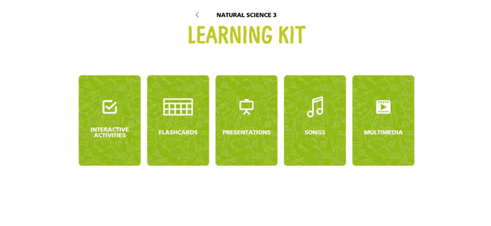 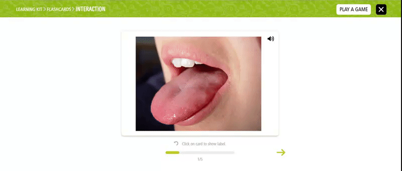 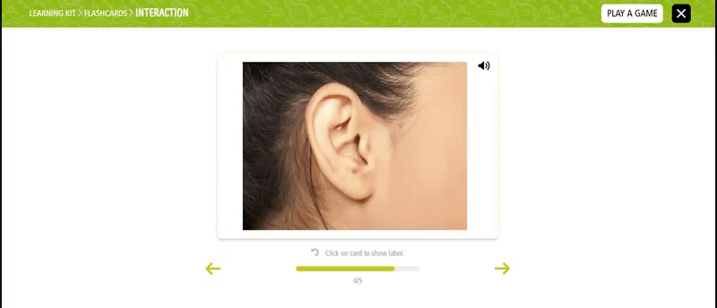Por tanto, vamos a explicar las fases de edición para conseguir generar el módulo de flashcards.
Desde editorial, se nos proporcionarán las imágenes, los audios y el texto que debe ir en cada tarjeta (flashcard) además de indicarnos tanto la unidad a la que pertenece cada una, la categoría y el orden de aparición dentro de cada unidad. Habitualmente suelen proporcionarnos un doc con toda esta información similar a éste (puede ser diferente):
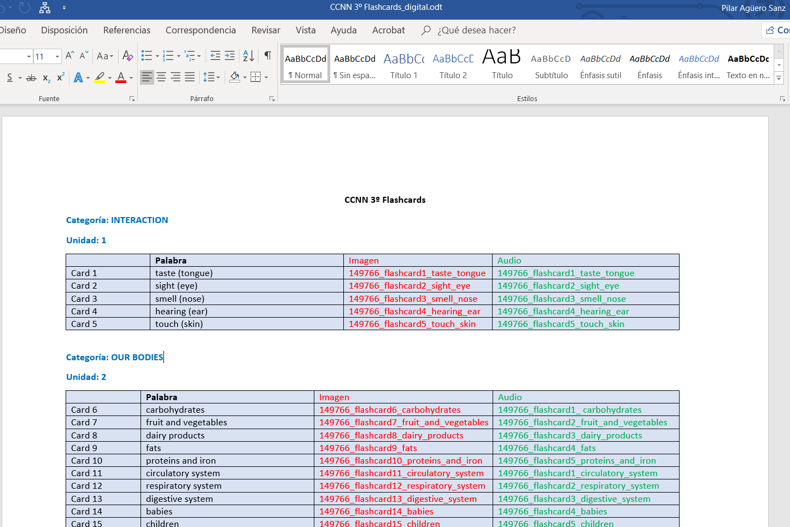Lo primero que hay que hacer es adaptar las imágenes de origen proporcionadas por editorial a un tamaño y formato adecuado, en este caso, sería:
Estas serían las imágenes proporcionadas por editorial (observamos que pueden venir en diferentes formatos, tamaños y resoluciones):
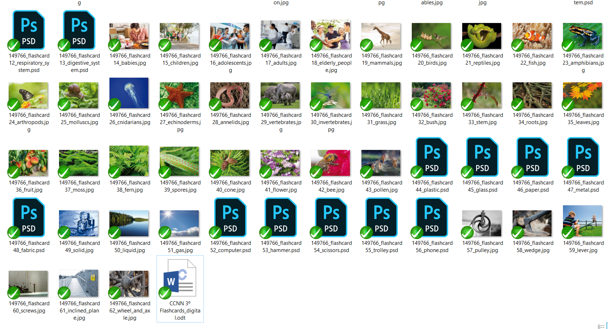Es buena práctica generar estas imágenes en una carpeta de trabajo fuera del repositorio del que estemos trabajando. Estas serían nuestras imágenes una vez tratadas:
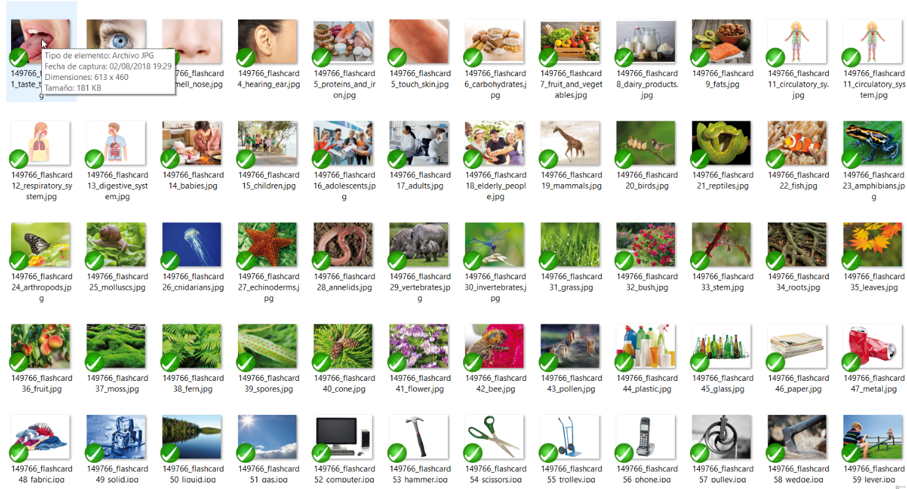Una vez tenemos todas las imágenes preparadas, las dejamos reservadas para el montaje posterior mediante la herramienta correspondiente del CAT.
Se ha de resaltar, que la nomenclatura de los archivos no puede contener ni espacios, ni caracteres especiales (como tildes, ñ, @, !, ?, apóstrofos, etc.), sin embargo, de momento no trataremos este problema, ya que la herramienta de edición de flashcards, realizará este proceso de forma automática.
Lo primero que hay que hacer es comprobar que los audios de origen proporcionadas por editorial vienen en formato adecuado:
En caso contrario, o bien se solicitan de nuevo, o habría que pasar uno a uno por un conversor, para conseguirlo. Es buena práctica generar estos audios en una carpeta de trabajo fuera del repositorio del que estemos trabajando. Estas serían nuestros audios:
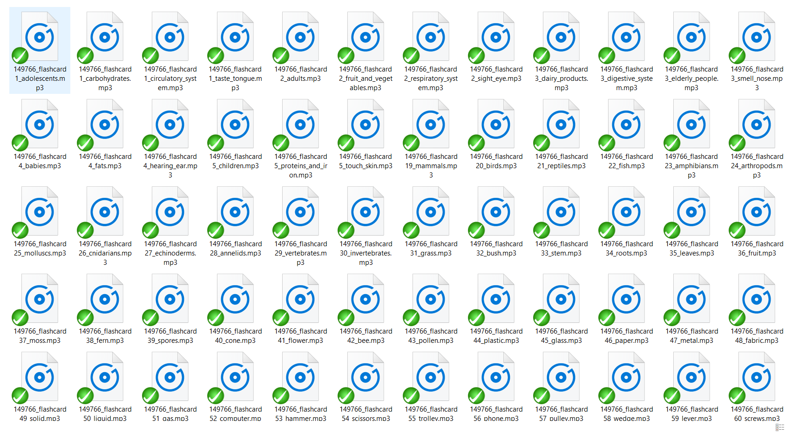Una vez tenemos todas los audios preparados, los dejamos reservados para el montaje posterior mediante la herramienta correspondiente del CAT.
Se ha de resaltar, que la nomenclatura de los archivos no puede contener ni espacios, ni caracteres especiales (como tildes, ñ, @, !, ?, apóstrofos, etc.), sin embargo, de momento no trataremos este problema, ya que la herramienta de edición de flashcards, realizará este proceso de forma automática.
Para poder logarse en el CAT es necesario disponer de:
En primer lugar, nos aseguramos de que el CAT está perfectamente updateado:

Para acceder a la herramienta del Cat que nos ayudará a generar los flashcards pulsamos el siguiente icono, denominado Flashcards:
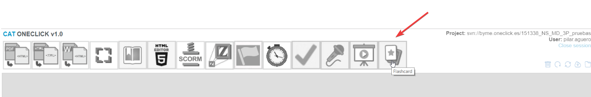 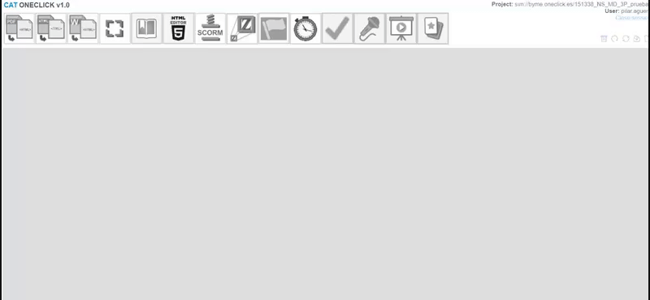Tal y como hemos anticipado antes, nuestra herramienta nos permite cargar el material previamente tratado (imágenes y audios) en el repositorio del libro en el que estemos trabajando. Además, durante este proceso, realizará una “limpieza” de la nomenclatura de los archivos, para evitar posibles errores posteriores de carga en la plataforma web (espacios, caracteres especiales, etc). Por tanto, a partir de este momento, es probable que alguno de los archivos de imagen o audio que vienen reflejados en el doc, no tengan exactamente la misma nomenclatura, pero sí será muy similar y fácilmente identificable.
Comprobamos que, en nuestro repositorio, no existe la carpeta flashcards:
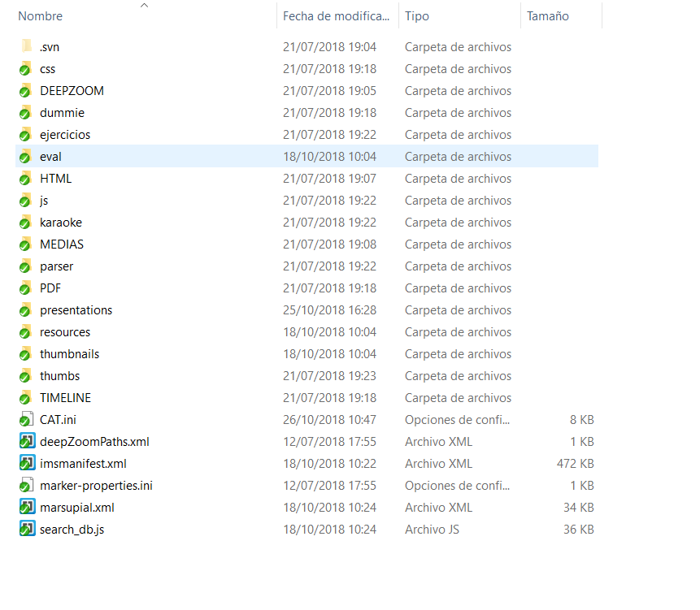Desde la herramienta Flashcards pulsamos el botón “Repo”, en la pantalla que nos aparece pulsamos “Add asset” y se nos abrirá un explorador desde el que podremos acceder a las carpetas en las que hemos reservado nuestras imágenes y nuestros audios:
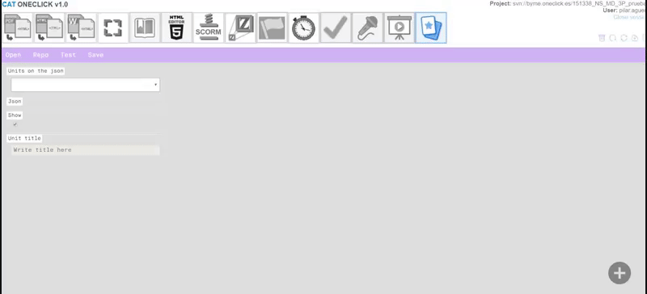Seleccionamos todas nuestras imágenes:
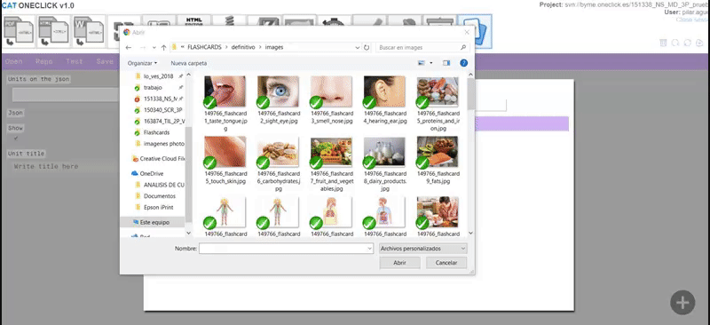Repetimos pulsar “Add asset” y seleccionamos todos nuestros audios:
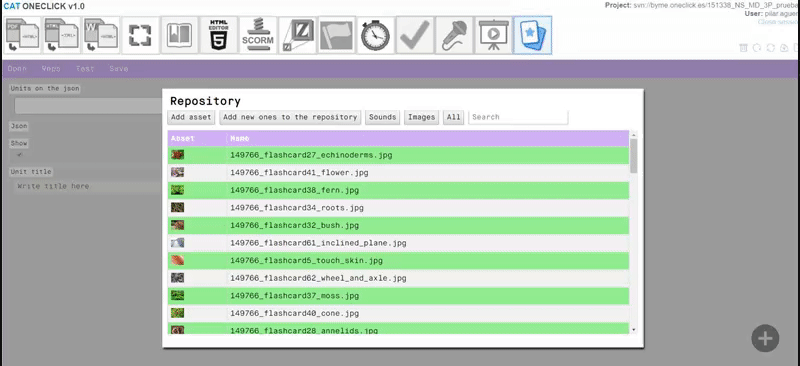Pulsaremos “Add new ones to the repository”, para que nos las cargue automáticamente en nuestro libro (esta operación puede tardar más o menos tiempo dependiendo del peso de los archivos a subir):
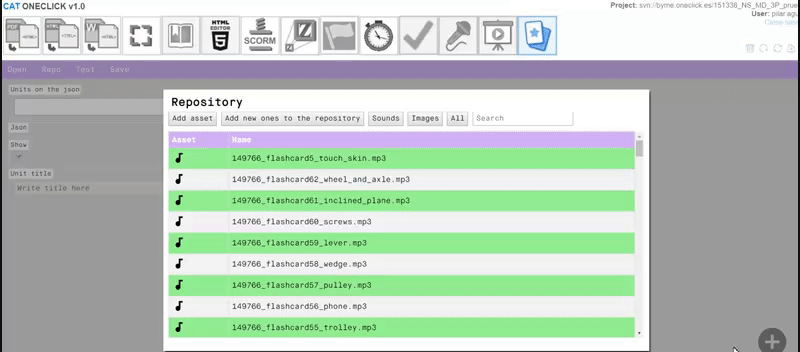Una vez cargadas, la pantalla de “Repo”, ya no las muestra en color verde (este color indica que los asset o archivos son nuevos y no están en el repositorio) y podemos filtrar por audios e imágenes, para comprobar que están todas las que vamos a necesitar:
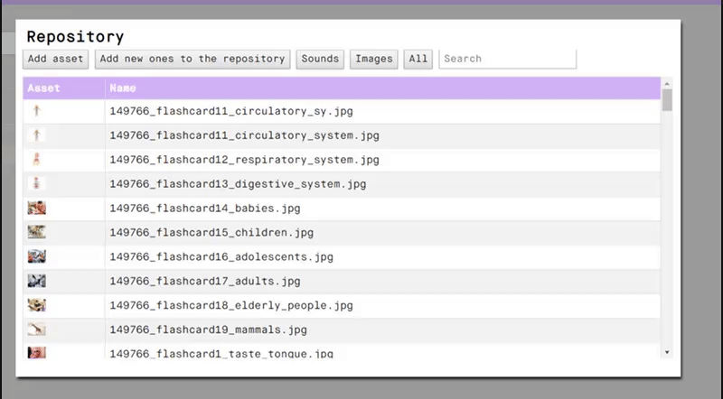Si posteriormente necesitáramos cargar algún archivo nuevo, realizaríamos el mismo proceso.
Updateamos ahora nuestro repositorio y comprobamos que se nos ha generado la carpeta flashcards, dentro de ella habrá otras 2 carpetas que contienen de forma independiente las imágenes y los audios que acabamos de cargar desde la herramienta, perfectamente renombrados sin espacios ni caracteres especiales:
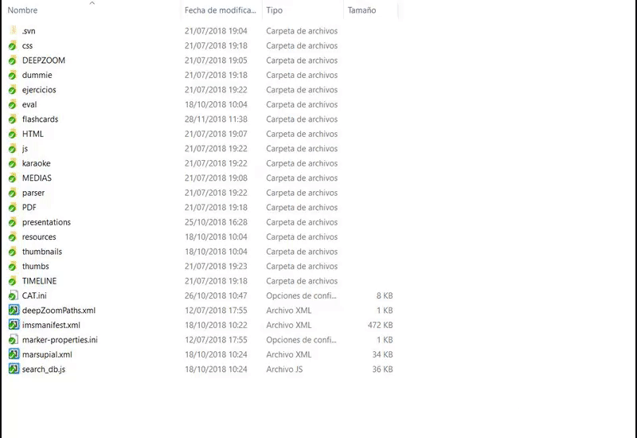En primer lugar, vamos a definir las unidades, que serán los bloques que nos aparecen en la pantalla principal, en nuestro ejemplo (Interaction, Our bodies, Animals, etc):
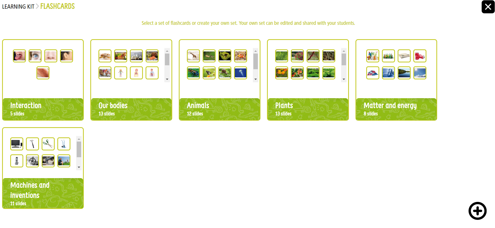Para ello, pulsamos el botón “Open” y seleccionamos el archivo “flashcards.json” (nunca debe cambiarse de nombre)
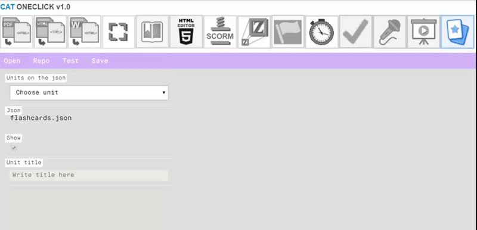En el desplegable de “Units on the json”, seleccionamos “New unit” y observaremos que se nos activan los campos “Show” y “Unit title”, además de aparecer una nueva línea en la parte derecha:
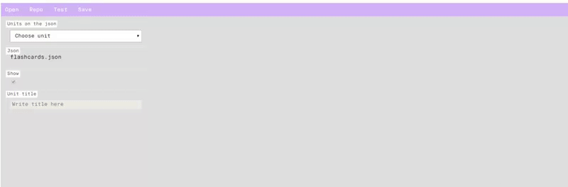El campo “Show” viene marcado por defecto, si desactiváramos el check, la unidad correspondiente no se mostraría en la plataforma digital. Esta opción puede ser necesaria en algunos casos durante el proceso de edición, ya que es posible, que haya que dejar activas ciertas unidades (que ya estarían completas en contenido) y dejar ocultas otras (por ejemplo, porque están a medias de montar por falta de algún contenido o material pendiente de proporcionar desde editorial).
En el campo “Unit title” escribiremos el nombre de la unidad, tal y como nos lo hayan definido en el doc desde editorial, en nuestro ejemplo (Interaction, Our bodies, Animals, etc):
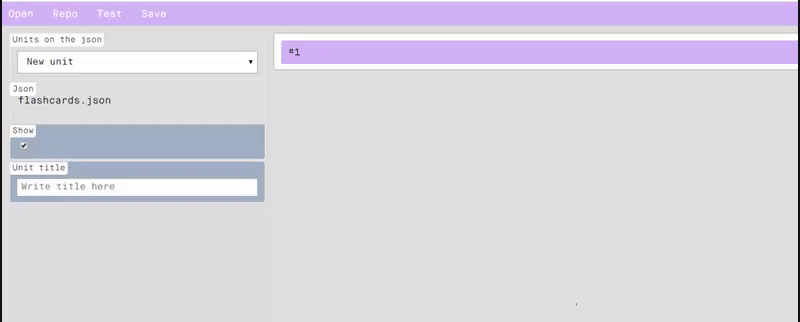Si intentamos salvar en este momento, nos avisará que existe un problema. Por lo que, para poder guardar una unidad, al menos debemos tener una card (que será cada una de las flashcard o tarjetas interactivas que se mostrarán). Esto es un sistema de seguridad, ya que no se pueden generar unidades sin contenido.
Por tanto, vamos a ver el proceso para generar cada una de las flashcards.
Dentro de la unidad, nos posicionamos sobre la línea #1 que apareció en el lado derecho de la pantalla, al pulsar sobre la zona morada se desplegará y nos aparecerán ciertos campos para editarla:
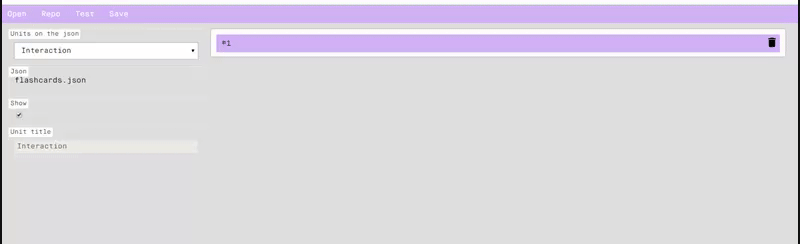Rellenaremos los campos siguiendo lo indicado en el doc de editorial, texto, imagen, audio y categoría:
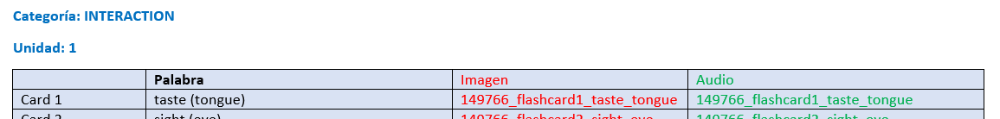 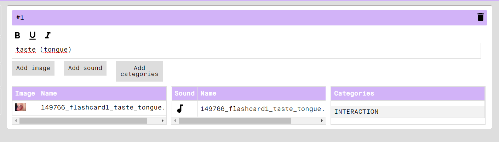El campo categoría, permite insertar más de una ya que la misma palabra puede pertenecer a varias. Para ello, volveremos a pulsar el botón “Add categories”, tantas veces nos sean necesarias. Además, si la categoría que necesitamos no está en el desplegable existente, nos permite la opción de definir la categoría que nosotros necesitemos:
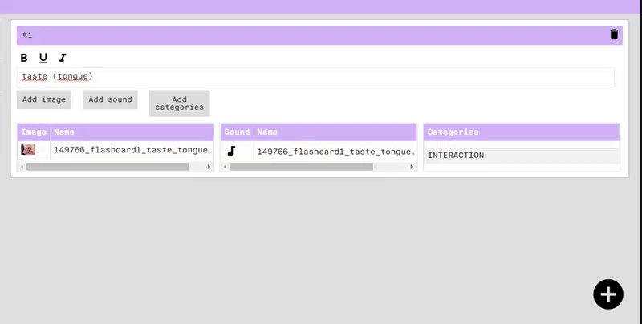Una buena práctica de trabajo sería pulsar el botón “Save” cada vez que completamos una card (de esta forma el cambio queda guardado automáticamente en el repositorio):
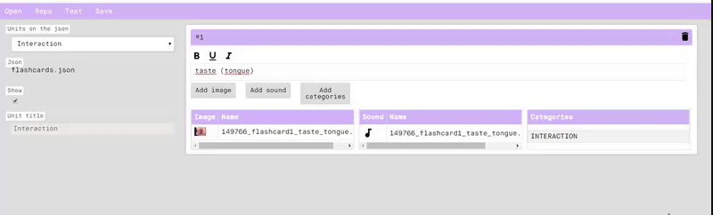Del mismo modo, vamos generando todas y cada una de las cards de la unidad, para ello pulsaremos el botón + situado en la parte inferior derecha de la pantalla principal:
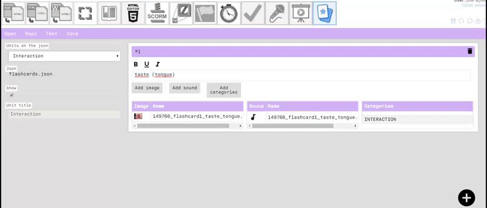Podemos ir comprobando el funcionamiento de los que llevamos creado pulsando el botón Test del menú superior:
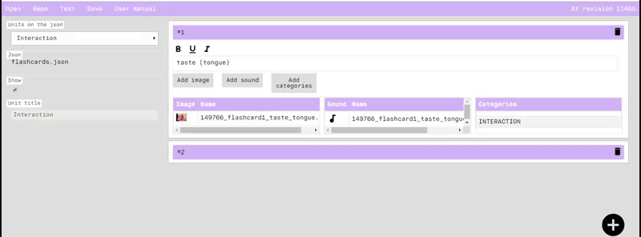Una vez guardada la primera unidad, podemos proceder a generar más unidades repitiendo el mismo procedimiento:
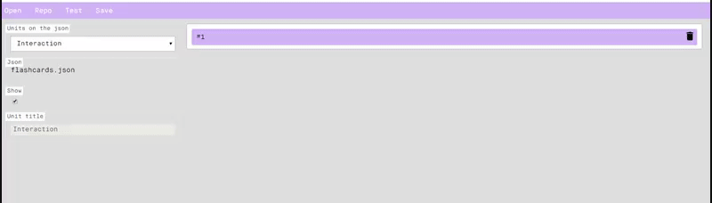Una vez que hayamos cargado los contenidos, updatearemos nuestro repositorio, comprobando que en nuestra carpeta se ha creado e ido actualizando el archivo ”flashcards.json”
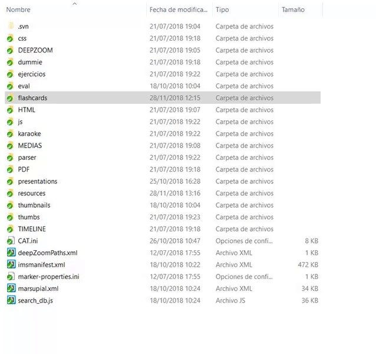